This document describes how to set up Microsoft Entra ID authentication for Mobile VPN with IPSec.
Integration Summary
The hardware and software used in this guide include:
- Microsoft Azure
- Firebox with Fireware v12.10.2
Topology
This topology diagram shows the data flow for Microsoft Entra ID authentication with a WatchGuard Firebox and Microsoft Entra Domain Services.
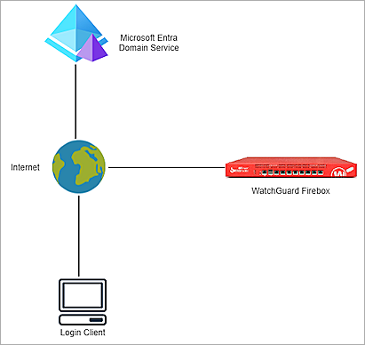
Before You Begin
Before you begin these procedures, make sure that:
- You have a Microsoft Azure global administrator account within the Microsoft Entra ID tenant.
- You have an active Microsoft Azure subscription.
- You have created and configured Microsoft Entra Domain Services.
Additional charges might apply for the use of Microsoft Azure. To learn more about Microsoft Azure, go to What is Microsoft Entra Domain Services.
Configure Microsoft Azure
To configure a Microsoft Entra Domain Services managed domain, complete these steps:
- Configure Secure LDAP
- Configure a Security Rule in Microsoft Azure
- Add a Microsoft Entra ID Group and User
Configure Secure LDAP
To configure Secure LDAP:
- Log in to the Microsoft Azure portal with your Microsoft Azure account credentials.
- Click Resource Groups.
- Select your Microsoft Entra Domain Services resource group. The resource group is connected with the Microsoft Entra Domain Services managed domain you created.
- From the Resources list, click a resource with the Microsoft Entra Domain Services resource type.
The Microsoft Entra Domain Services page opens for the domain name you created.
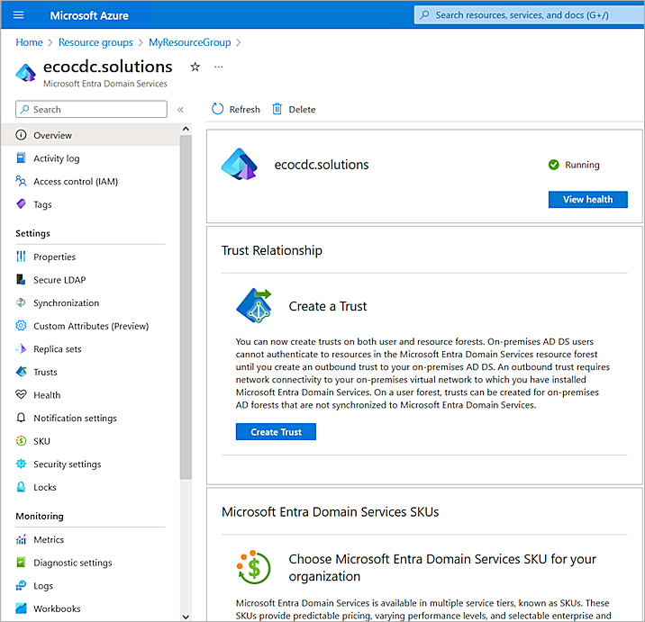
- Select Settings > Secure LDAP.
The Secure LDAP settings page opens.
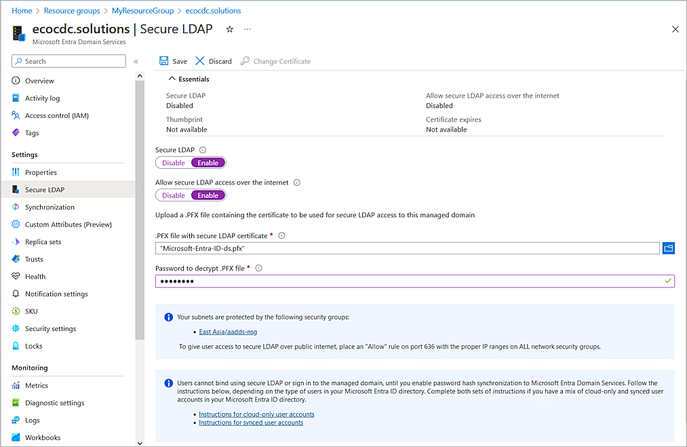
- Enable the Secure LDAP toggle.
- Enable the Allow Secure LDAP Access Over the Internet toggle.
- Next to the .PFX File with Secure LDAP Certificate text box, click the folder icon and upload your certificate. For information about how to create and export the certificate, go to Configure Secure LDAP in the Microsoft documentation.
- In the Password To Decrypt .PFX File text box, type the password.
- Click Save. It might take some time to save the changes.
The status of the Secure LDAP parameter changes to Enabled.
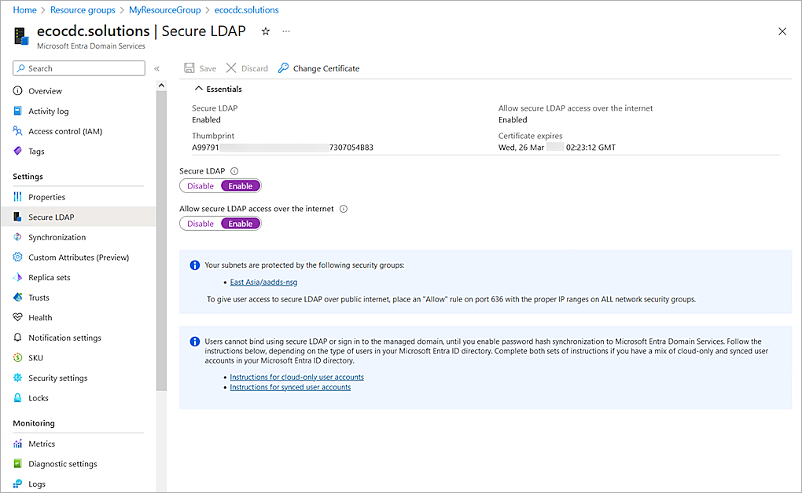
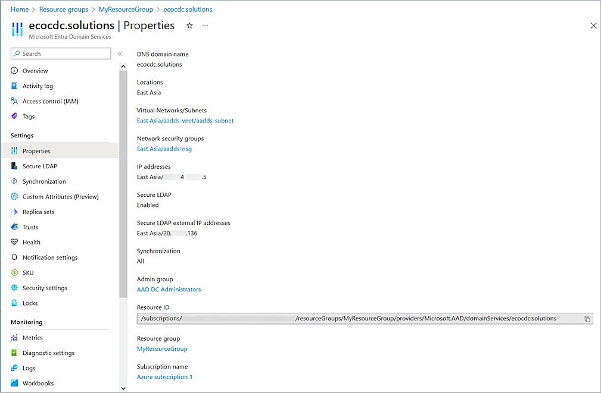
- Copy the value of the Secure LDAP External IP Addresses parameter. You need this information when you configure the Firebox.
Configure a Security Rule in Microsoft Azure
To configure a security rule in Microsoft Azure:
- In the Microsoft Azure portal, click Resource Groups.
- Select your Microsoft Entra Domain Services resource group.
The Resource Group page opens.
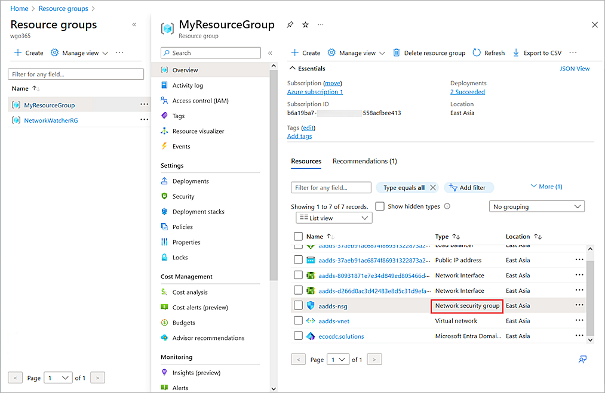
- From the Resources list, click a resource with the Network Security Group resource type.
The Network Security Group page opens. - Select Settings > Inbound Security Rules > Add.
The Add Inbound Security Rules page opens.
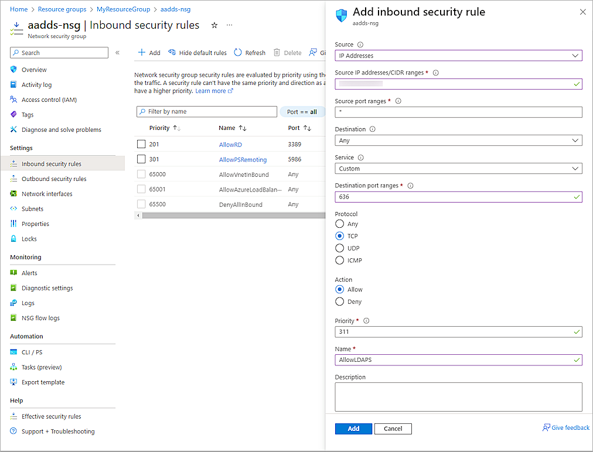
- From the Source drop-down list, select IP Addresses.
- In the Source IP Addresses/CIDR Ranges text box, type the public IP address or range for your environment.
- From the Destination drop-down list, select Any.
- From the Service drop-down list, select Custom.
- In the Destination Port Ranges text box, type 636.
- For Protocol, select TCP.
- In the Priority text box, type a number from 100 through 4096. In our example, we type 311.
- In the Name text box, type a name.
- Keep the default values for all other settings.
- Click Add.
The new security rule saves in Microsoft Azure.
Add a Microsoft Entra ID Group and User
To add a Microsoft Entra ID group and user:
- On the Microsoft Azure Home page, in the search box, type Microsoft Entra ID.
- Select Microsoft Entra ID.
- Select Manage > Groups.
- Click + New Group.
The New Group page opens.
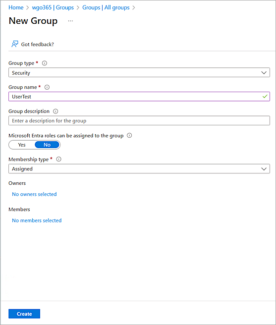
- From the Group Type drop-down list, select Security.
- In the Group Name text box, type a group name.
- From the Membership Type drop-down list, select Assigned.
- Click Create.
- To add a user, select Manage > Users.
- Click + New user.
The Create New User page opens.
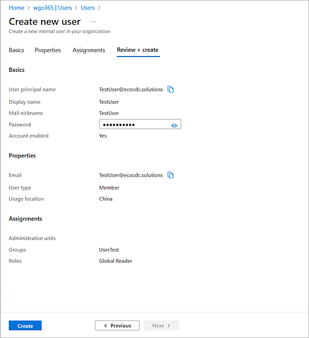
- Enter the user details.
The user you create must be a member of the Microsoft Entra ID group that you created.
- Click Create.
For cloud-only user accounts, users must change their passwords before they can use Microsoft Entra Domain Services. The password change process generates the password hashes for Kerberos and NTLM authentication and stores them in Microsoft Entra ID. The account is not synced from Microsoft Entra ID to Microsoft Entra Domain Service until the user changes the password. It might take a few minutes after the password change before the new password can be used in Microsoft Domain Services.
Configure the Firebox
To configure the Firebox, complete these steps:
Configure Active Directory Authentication
To configure Active Directory authentication, from Fireware Web UI:
- Log in to Fireware Web UI (https://<your Firebox IP address>:8080).
- Select Authentication > Servers.
The Authentication Servers page opens.
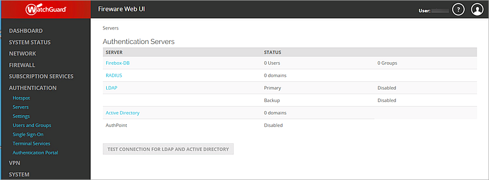
- From the Authentication Servers list, click Active Directory.
The Active Directory page opens. - Click Add.
- Click Next.
The Domain Name page opens.
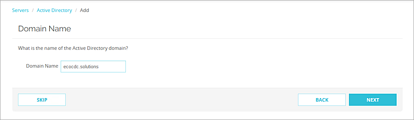
- In the Domain Name text box, type the domain name for this Active Directory server. You cannot change the domain name after you save the settings.
- Click Next.
The Active Directory Server page opens.
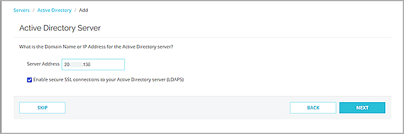
- In the Server Address text box, type or paste the secure LDAP external IP address you copied in the previous section.
- Select the Enable Secure SSL Connections to Your Active Directory Server (LDAPS) check box.
- Click Next.
- Click Finish.
Configure Mobile VPN with IPSec
To configure Mobile VPN with IPSec, from Fireware Web UI:
- Select VPN > Mobile VPN.
- From the IPSec section, click Configure.
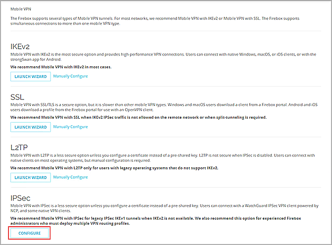
- To add a new group, click Add.
The Add Mobile VPN with IPSec page opens.
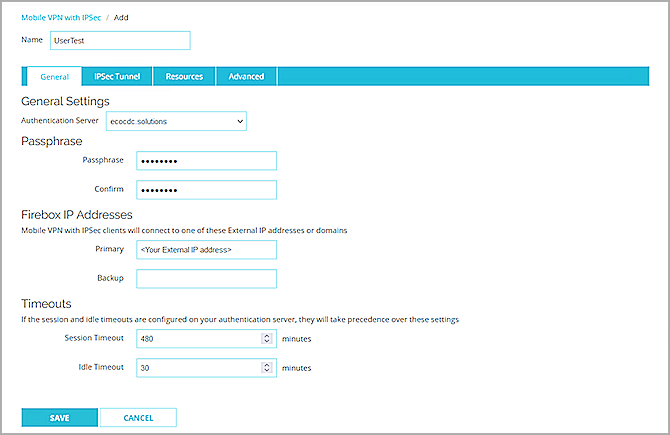
- In the Name text box, type a group name that matches the name of the Microsoft Entra ID group you configured in the Add a Microsoft Entra ID Group and User section.
- From the Authentication Server drop-down list, select your authentication server. In this example, we select ecocdc.solutions.
- In the Passphrase and Confirm text boxes, type a passphrase to encrypt the mobile VPN profile (.wgx file) you distribute to users in this group. The passphrase can only use standard ASCII characters. If you use a certificate for authentication, this passphrase is also used to encrypt the exported certificate file you send to users.
- In the Primary text box, type the external IP address of the Firebox that the VPN client connects to.
- Select the Resources tab.
The Resources page opens.
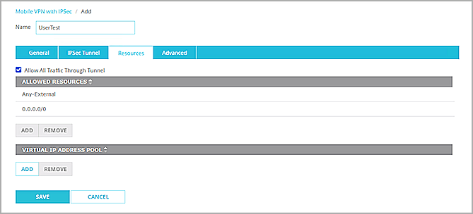
- Select the Allow All Traffic Through Tunnel check box.
- From the Virtual IP Address Pool section, click Add.
The Add Address Pool page opens.
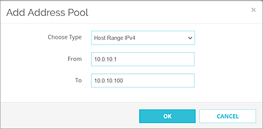
- From the Choose Type drop-down list, select Host Range IPv4.
- In the From and To text boxes, type a range for your virtual IP addresses. The range should not be in your interface range. The IP addresses in the virtual IP address pool cannot be used for anything else on your network.
- Click OK.
- Click Save.
The Mobile VPN with IPSec page opens.
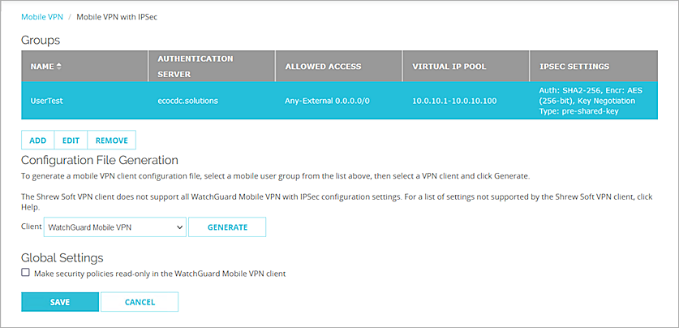
- From the Groups list, select your group.
- From the Client drop-down list, select WatchGuard Mobile VPN.
- Click Generate, then save the group name.ini file.
- Click Save.
Test the Integration
To test the integration of Microsoft Entra ID users and the WatchGuard Mobile VPN with IPSec.
- Open your WatchGuard Mobile VPN with IPSec client.
- Select Configuration > Profiles.
- Click Add / Import.
- Select Profile Import.
- Click Next.
- Browse to the group name.ini file you generated in the Configure Secure LDAP section.
- Click Next twice.
- Type your Microsoft Entra ID user name and password.
- Click Next.
- Click Finish.
- To close the profile page, click Cancel.
- Click the Connection toggle.
You are connected successfully.
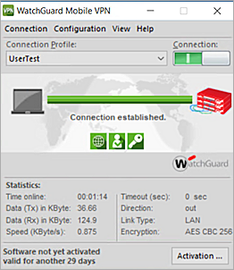